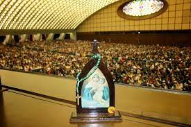

Schoenstatt es sinonimo de mision, la nuestra es renovar la iglesia y el mundo, de la mano, siempre con la presencia de Jesus y de Maria. Nuestro objetivo es forjar y hacer prevalecer estos valores que siempre estaran presentes en nosotros: libertad, familia y armonia. Somos la obra de Familia, mediante la planificacion, los objetivos, las aspiraciones, se llega a cumplir la mision. Con unidad, caridad y todos los valores que nos representan. 